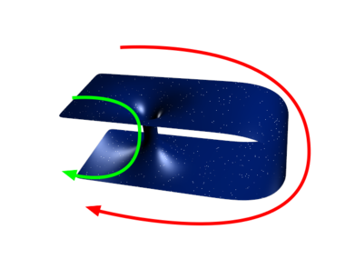
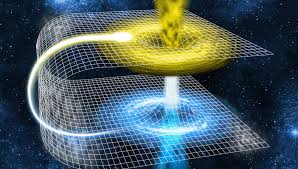

Agujeros de gusano
Puentes de Einstein & Rosen
¿Qué es un agujero de gusano?
Un agujero de gusano es un portal de corta duración, que dura sólo un breve momento y que une dos agujeros negros en diferentes lugares.
Los agujeros de gusano podrían conectar dos puntos del universo actual, o tal vez, en diferentes momentos. En teoría si cae materia dentro de un agujero de gusano, esta materia seguirá hasta llegar a un “agujero blanco” (lo contrario de un agujero negro) que se encontrará en el otro extremo.
No existen pruebas que demuestren que los agujeros de gusano existen. Los científicos no pueden determinar la forma en que se creó, a pesar de los astrofísicos, como Hawking, que siguen trabajando en este intrigante concepto.

El tritio es un isótoporadiactivo del hidrógeno cuyo núcleo consiste en un protón y dos neutrones. La aplicación más importante del tritio es su utilización como combustible nuclear para la obtención de energía mediante la fusión nuclear.

Aguero Blanco
Comenta Aqui

Comentarios
Daniela
Daniela